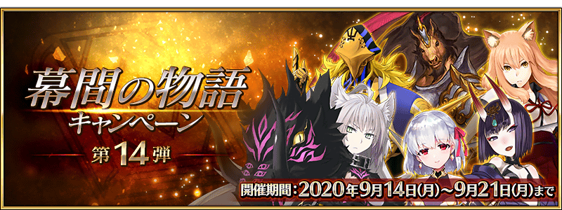
以期間限定舉辦「幕間物語宣傳活動 第14彈」。
宣傳活動舉辦中所有從者的幕間物語消耗AP變成1/2！
藉此機會滿足開放條件，通過喜愛從者的物語吧！
※本頁面皆為開發中圖片。會有與實際圖片相異的情況。
◆舉辦期間◆
2020年9月14日(一) 17:00～9月21日(一) 11:59
◆對象關卡◆
所有的幕間物語
也包含自※2020年9月14日(一) 17:00開放的幕間物語。

◆開放時間◆ 2020年9月14日(一) 17:00～
◆對象從者◆ ・伽摩 ・酒吞童子(Assassin) ・鈴鹿御前 ・阿塔蘭塔〔Alter〕 ・赤兔馬 ・阿維斯布隆
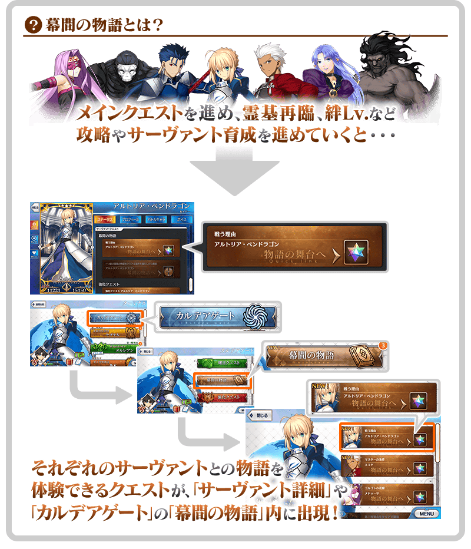
|
◆關卡開放條件◆ ◆關卡通過報酬◆ |
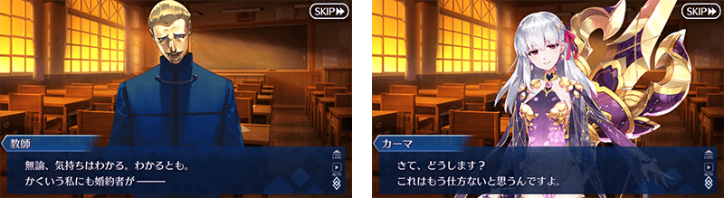
| 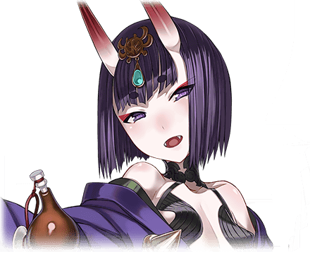 |
◆關卡開放條件◆ ◆關卡通過報酬◆ |
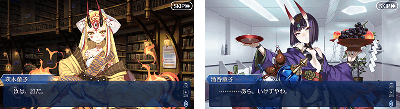
|
◆關卡開放條件◆ ◆關卡通過報酬◆ |
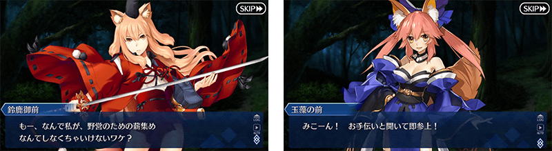
| 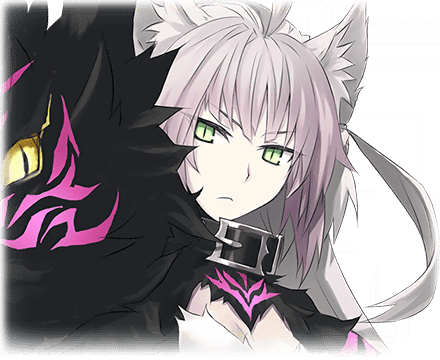 |
◆關卡開放條件◆ ◆關卡通過報酬◆ |
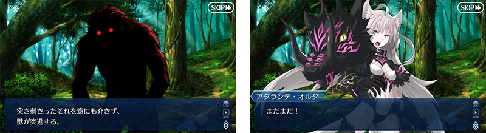
|
◆關卡開放條件◆ ◆關卡通過報酬◆ |
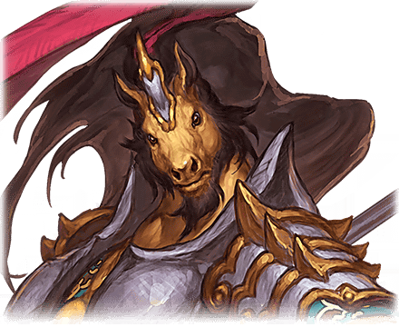 |
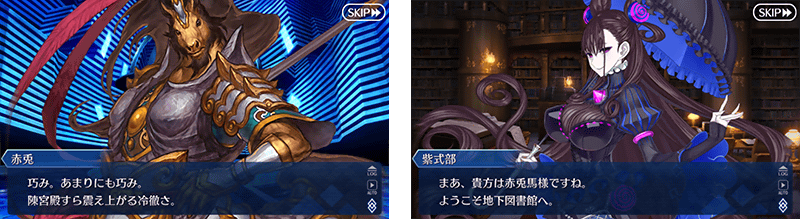
| 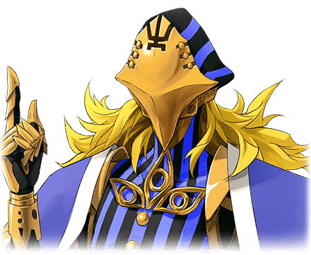 |
◆關卡開放條件◆ ◆關卡通過報酬◆ |
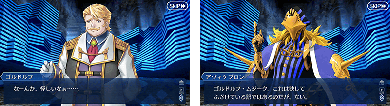
其他還有，期間限定「幕間物語宣傳活動第14彈Pick Up召喚｣同時舉辦！
關於詳情，請自下述橫幅確認。
■「幕間物語宣傳活動第14彈Pick Up召喚」詳細情報 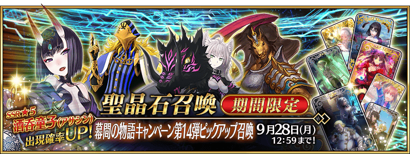